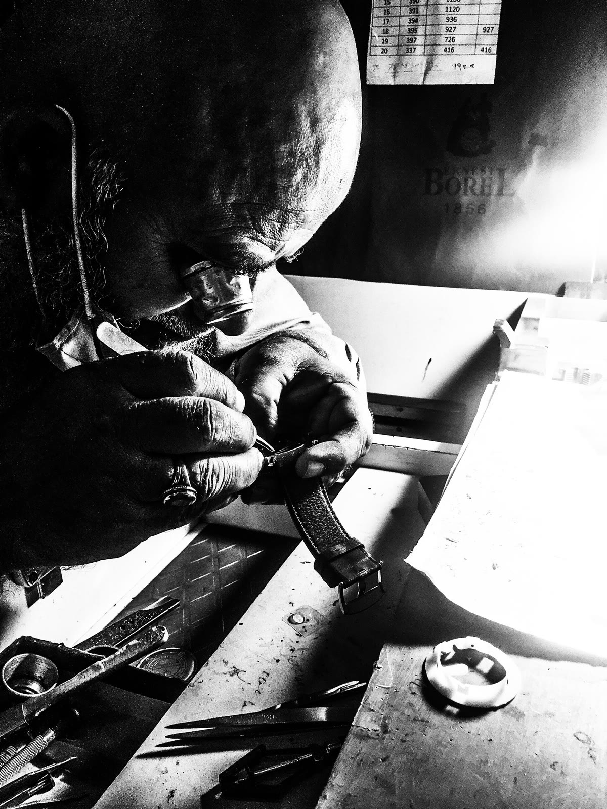
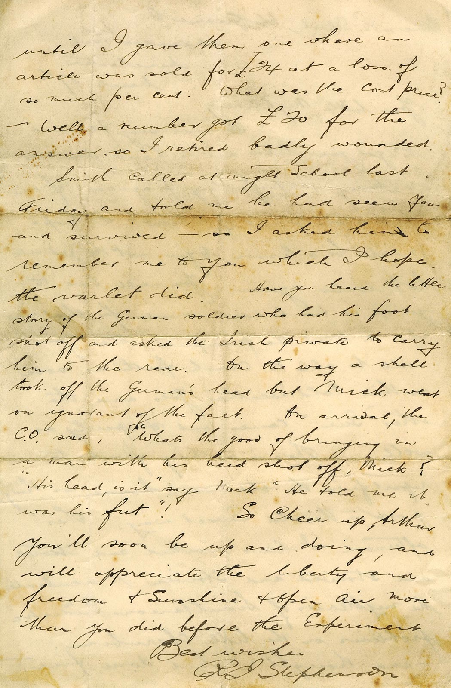
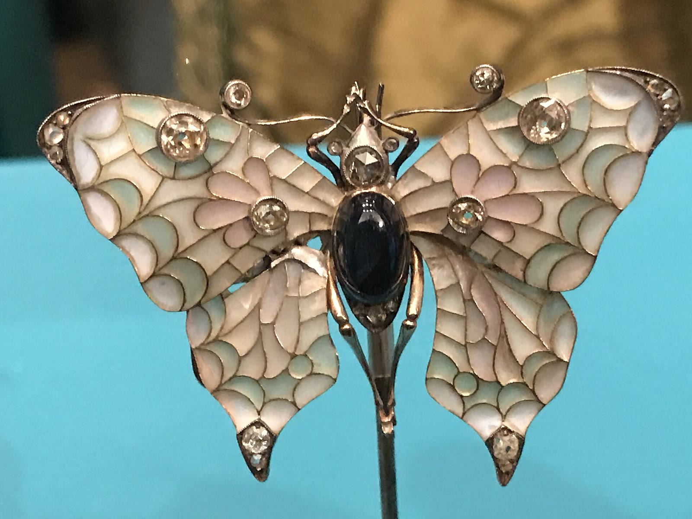

時計修理台の手元
00:20–00:30

- 画面
- 時計を直す手、ピンセット、細かな部品。顔と全身は画角外に置く。
- 意図
- ミラの職能と、触れれば壊れそうな精密さを最初に見せる。
- 尺
- 00:20–00:30 / 10秒
- カメラ
- Close / Slow pan
- 成立条件
- 手元と修理台へ最初に視線が集まる。
00:20–00:50 · 3 SHOTS
時計修理師ミラの仕事場で、行方の分からない兄トーマのメモと真鍮の蛾が見つかる。
9:17という時刻が反復するが、蛾の働きとトーマの運命はまだ定まらない。





本番表示 9:17主参照の針位置は9:15の近似。時刻の置換が成立条件。